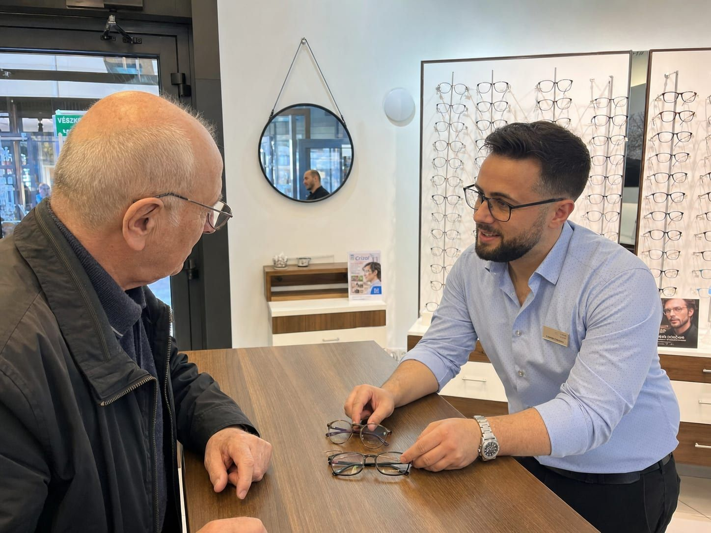

Gyors javítás és beállítás
Eltört a szár? Meglazult a csavar? Nyaralás közben is megoldjuk – sokszor még aznap.
Egy szemüveg akkor romlik el, amikor a legkevésbé sem várná – pont a nyaralás közepén. Nálunk nem kell hetekig várnia: a legtöbb apró hibát helyben, gyorsan orvosoljuk, hogy tisztán lásson tovább.
Akár nálunk készült a szemüveg, akár máshol vette, hozza be nyugodtan – megnézzük, és őszintén megmondjuk, mi a helyzet vele.
Miben tudunk segíteni
A legtöbb probléma pár perc, és megvárható.
Törött szár, csuklópánt
Meglazult vagy letört szárat, csuklópántot javítunk vagy cserélünk.
Meglazult csavar
Utánahúzzuk vagy pótoljuk a hiányzó apró csavarokat.
Orrtámasz csere
Elszíneződött vagy hiányzó orrtámaszt frissítünk a kényelemért.
Elgörbült keret
Visszaigazítjuk a keretet, hogy újra pontosan és egyenesen üljön.

Beállítás, hogy kényelmes legyen
Egy jól beállított szemüveg fel sem tűnik – nem csúszik, nem nyom, és pontosan a szeme elé kerül a lencse. Ha a régi kerete kényelmetlenné vált, néhány mozdulattal újra a helyére igazítjuk. Ez a szolgáltatás nálunk gyors és barátságos.
- Ingyenes utánállítás a nálunk vásárolt szemüvegekre
- Ultrahangos tisztítás igény szerint
- Máshol vett szemüveget is szívesen megnézünk
- Őszinte szó: ha nem éri meg javítani, elmondjuk
A legtöbb javítás megvárható
Utánállítás a nálunk vásárolt szemüvegre
Máshol vett szemüveget is megnézünk
Gyakori kérdések
A leggyakoribb kérdések a javításról és beállításról.
Kell előre időpontot kérnem egy javításhoz?
Máshol vásárolt szemüveget is megjavítanak?
Mennyibe kerül egy javítás vagy beállítás?
Nyaralás közben eltört a szemüvegem – tudnak segíteni?
Hozza be, megnézzük
Ugorjon be nyitvatartási időben, vagy hívjon – a legtöbb javítás megvárható.